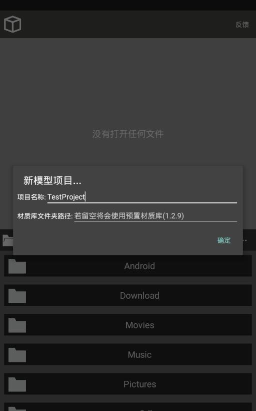
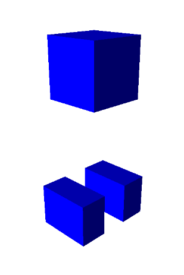
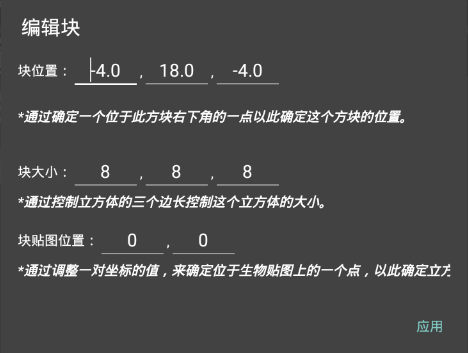
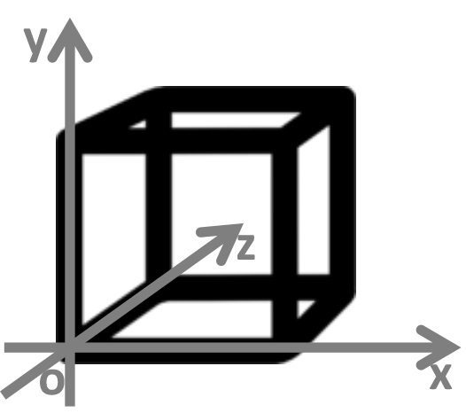
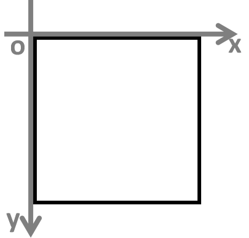
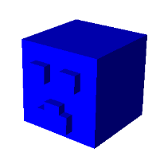

| 教学：制作示例模型 | |
（1）点击[开始工作]-[菜单]-[···]-[新建...]-[模型项目]，将会展示出一个对话框，填写项目名称，这里我们就使用默认材质库，即不需填写第二栏。点击[确定]。  （2）打开刚才创建好了的项目里的models/mobs.json文件，开始编辑模型（此处完整路径为：/storage/emulated/0/TestProject/models/mobs.json）。 （3）点击[增加生物]，这里我们选择[爬行者]作为示例。这时，我们可以点击左上角的[]按钮进行一次保存。 （4）让我们开始做一个简单的模型，删掉处头部以外的其他部位。操作： 先点击部位选择栏在弹出的框中我们可以看到当前生物的所有部位，先点击[身体]-[删除部位]，这时，我们可以看到此生生物的“身体”部位被已删掉，我们可以点击[]进行预览：  重复上述操作，直到只剩下“头部”部位为止。 （5）我们点击[块(-4.0，18.0，-4.0)]编辑头部块。  在弹出的对话框中，我们先看第一行，块位置，这里的三个空从左到右依次是x,y,z，但这并不是标准的空间直角坐标系，因为它们分别代表左右，上下，前后的位置，下一行的块大小也是这样调控，我们可以通过这张图理解：  （6）所以，我们填写(-5.0,0.0,0.0)确定主干位置。块大小采用10×10×10。最后贴图位置即此方块的贴图在此生物贴图中的坐标，分别为x，y，与块位置一样，这并不是标准的平面直角坐标系，如图：  我们这里先填写(0,0)。 （7）如此，我们再修改枢轴。点击[枢轴(0.0，18.0，0.0)]进行控制，x，y，z我们依次填写(0.0,0.0,0.0)即可。 （8）我们点击[增加块]，为它增加眼睛和嘴巴，分别都由两个方块组成，贴图位置为(0,0)，完成后，我们可以看到：  你可以随时在新建模型文件时创建这个示例参考。 |
|
| *教学中的图片若未说明，均来源于Minecraft Builder，请勿在未允许的情况下盗取或引入任何本页资源。 |
|